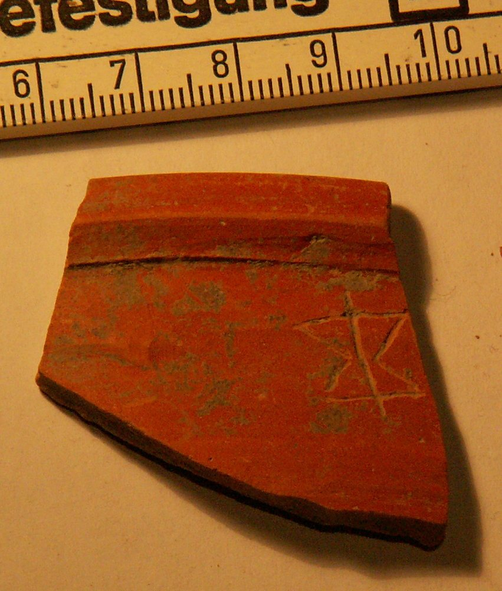

Grafito con signo (signo semejante al del alfabeto ibérico ko/go) sobre cerámica común barnizada (Pompelo, Plaza del Castillo, Pamplona, Navarra)
Pompelo (Pamplona, Navarra), Hispania citerior · s. II d.C.


Texto
Signo semejante al del alfabeto ibérico ko/go
Comentario
Como señala el Prof. Velaza, la tipología de este signo, así como el contexto general tan tardío, hacen difícil identificarlo como un elemento del signario paleohispánico.
Descripción
- Soporte
- Fragmento de borde engrosado al exterior de 16 cm de Ø de cerámica común barnizada. Barniz color naranja y pasta compacta del mismo color.
- Disposición
- Localización del grafito: Cerca del borde.
- Descripción del grafito
- Grafito semejante al signo del alfabeto ibérico ko/go.
- Datación
- s. II d.C.
- Lugar de origen
- Pompelo (Pamplona, Navarra), Hispania citerior
- Hallazgo
- Excavación de la Plaza del Castillo de Pamplona (2001-2003), sector 1. Según el contexto general de la excavación, las piezas aparecieron en un barrio artesanal. Los estratos están revueltos y no hay estratigrafía válida para fechar las piezas: la datación se basa en las formas cerámicas.
- Ubicación actual
- Almacén de Arqueología del Gobierno de Navarra
Bibliografía
- P. Ozcáriz Gil; M. Unzu, «Grafitos figurativos, palmas, tridentes y otros signos en cerámica romana de la Plaza del Castillo de Pamplona», Príncipe de Viana 253 (2011), pp. 79-95.
Cómo citar esta ficha
Ozcáriz Gil, P., Grafitos sobre cerámica romana: corpus EpiDoc, ficha pompelo-025-koga, https://pozcariz.github.io/grafitos-epidoc/pompelo-025-koga.html.